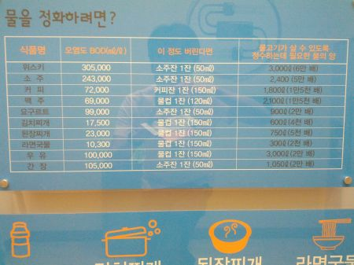
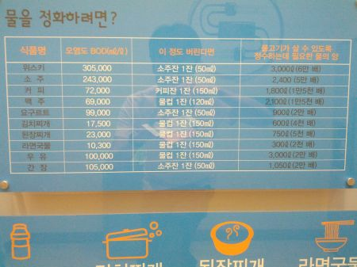

3년만에 찾아오신 귀한 손님
9/17/2012
감기 몸살이 시작된 지 거진 일주일인데 여전히 골골댄다.
담배를 끊고 나선 달달이 찾아오던 두통이랑 절기마다 앓던 감기몸살이 사라졌었는데, 그 약발도 3년 유통기한인 듯. 이건 도로 피우라는 계시
담배를 끊고 나선 달달이 찾아오던 두통이랑 절기마다 앓던 감기몸살이 사라졌었는데, 그 약발도 3년 유통기한인 듯. 이건 도로 피우라는 계시
어쨋든 빨리 루틴한 일상으로 돌아가고 싶은 열망을 담아 특제 메밀 차를 투입했다.
뭔가 철자가 이상해 보이는 건 단순히 기분 탓이겠지.
집에 널부러져 있으면 오히려 더 퍼질까봐 예정된 주말 외출을 강행했다.
지끈거리는 머리를 감싸고 판교 동생태 박물관에 갔었는데 거기서 상당히 독창적인 도표를 발견했다.
한 줄 요약하자면 위스키 50ml를 정화하기 위해 3톤씩이나 물이 필요하다고.

따라서 우리들 주위의 유흥 주점은 자연을 지키기 위한 최소한의 도시 기반 설비. 뭐 임마?
왠지 정량적으로 완벽하지만 정성적으로 반박하고 싶은 생각이 드는 주장의 좋은 예.
뭔가 철자가 이상해 보이는 건 단순히 기분 탓이겠지.
집에 널부러져 있으면 오히려 더 퍼질까봐 예정된 주말 외출을 강행했다.
지끈거리는 머리를 감싸고 판교 동생태 박물관에 갔었는데 거기서 상당히 독창적인 도표를 발견했다.
한 줄 요약하자면 위스키 50ml를 정화하기 위해 3톤씩이나 물이 필요하다고.

따라서 3잔 이상의 위스키를 마셔 없앤다면 하루 10톤의 물을 맑게 유지하는 셈이 됩니다.
따라서 우리들 주위의 유흥 주점은 자연을 지키기 위한 최소한의 도시 기반 설비. 뭐 임마?
왠지 정량적으로 완벽하지만 정성적으로 반박하고 싶은 생각이 드는 주장의 좋은 예.
이렇게 몸이 아프면 왠지 모르게 터프가이 보다는 말랑꼴리한 터치 가이가 끌리고
도촬인 관계로 흔들렸지만 분명히 TOUCH GUY.
도촬인 관계로 흔들렸지만 분명히 TOUCH GUY.
반대편에서 내 눈을 쑤셔대는 하이빔도 너그러이 눈을 감아 줄 수 있을 것 같다.
태.. 태양권!
태.. 태양권!
대체 이 몸살은 언제쯤 가셔서 정상적인 블로깅을 할 수 있게 될까?